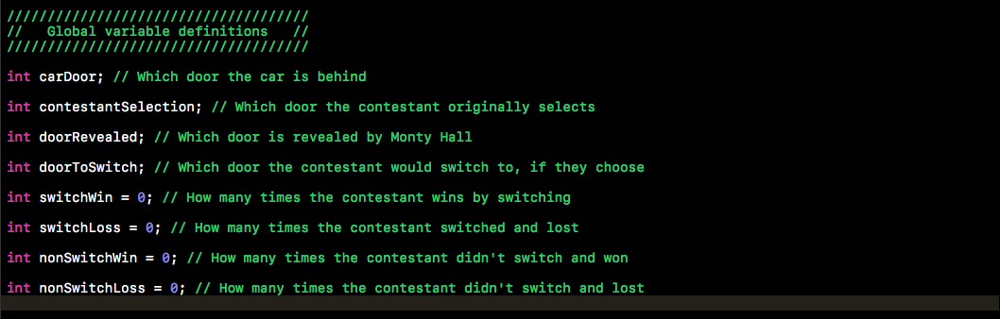
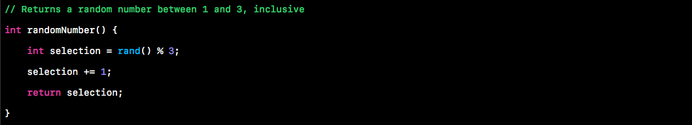
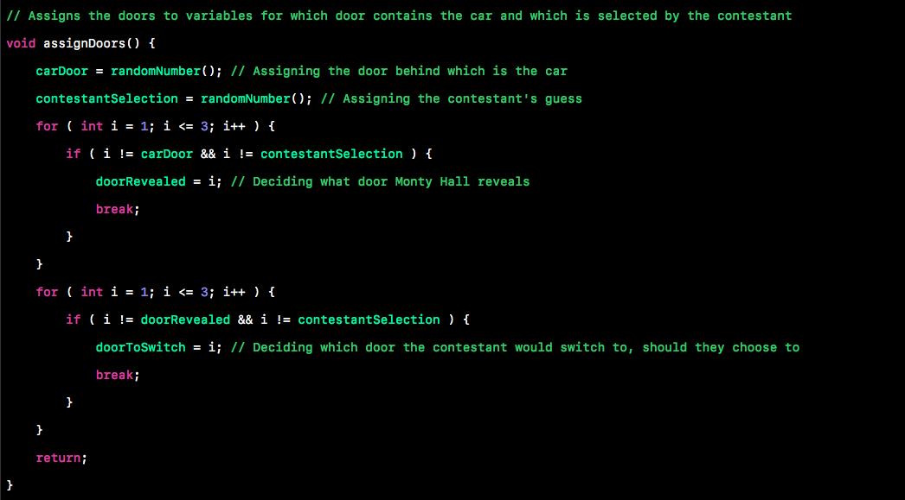
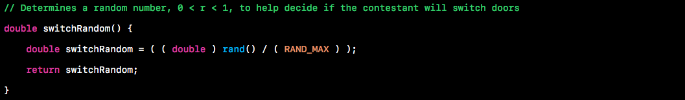
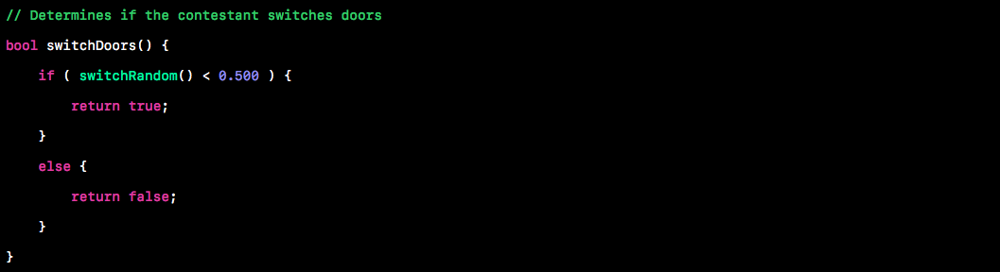
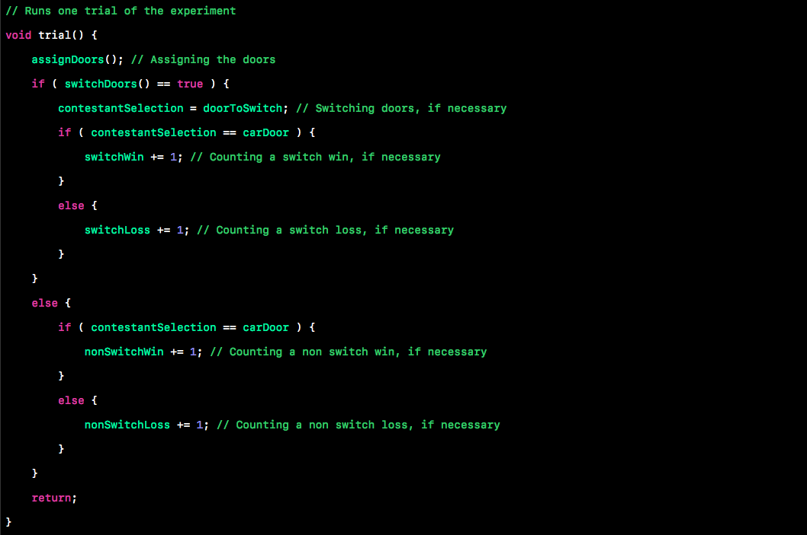

Published on February 11, 2017 by Matthew Schmitz
“No other statistical puzzle comes so close to fooling all the people all the time, […] even Nobel physicists systematically give the wrong answer, and they insist on it, and they are ready to berate in print those who propose the right answer.”
This is a quote from cognitive psychologist Massimo Piattelli-Palmarini, speaking about the famous Monty Hall Problem. It is true, in fact, that in many studies, under 15% of participants realize the solution to the problem. The problem is known for its counter-intuitiveness and sheer paradoxical nature, but rest assured, it yields quite an amazing result.
The problem, although first introduced in the 1970s, gained popularity in 1990 when a reader’s letter to Marilyn vos Savant from Parade magazine asked:
Suppose you’re on a game show, and you’re given the choice of three doors: Behind one door is a car; behind the others, goats. You pick a door, say No. 1, and the host, who knows what’s behind the doors, opens another door, say No. 3, which has a goat. He then says to you, “Do you want to pick door No. 2?” Is it to your advantage to switch your choice?
Vos Savant said that, contrary to intuition, switching doors gives you a 2/3 chance of winning the car, whereas opting not to switch doors results in a 1/3 chance of winning.
Shouldn’t switching doors yield 50% success? There are, after all, only two doors remaining after the host reveals one; one of which hides a car, the other hiding a goat.
There are several simple, and several rather complex ways of explaining the solution to the problem, but before I provide explanation, we should investigate whether or no vos Savant was correct by our own means.
I wrote a basic program in C++ to determine if vos Savant was, in fact, correct in her analysis of the problem. The problem can be broken down into three fundamental assumptions (vos Savant 1990):
- The host must always open a door that was not picked by the contestant (Mueser and Granberg 1999).
- The host must always open a door to reveal a goat and never the car.
- The host must always offer the chance to switch between the originally chosen door and the remaining closed door.
Under these three assumptions, we can begin to develop the code to illustrate the solution to the problem.
We can start by defining some global variables to keep track of our doors and count our wins and losses.
We then create a function to generate and return a random integer from 1 to 3. This function will be used to manage and assign the doors.
We can then, using our random number function, create a function to assign the doors. This function first determines which door, 1, 2, or 3, will hide the car, before generating a random contestant guess, 1, 2, or 3. The for loop that follows iterates through the integers 1, 2, and 3 to determine which door will be revealed by the host. Remember that under the given assumptions, the door revealed by the host cannot be the door with the car or the door that the contestant selected, hence the conditions tested by the if statement. After determining what door the host is to reveal, the program then uses a for loop with an if statement to decide what door the contestant should switch to, if they choose. This door is the remaining door that is not currently assigned as the contestant’s selection.
Next we create functions that will work together to determine whether or not the contestant is going to switch doors. To get meaningful results, we would like it to be close to 50/50, switching doors vs. not switching doors. The first function determines a random decimal between 0 and 1, and the second returns true or false, dictating whether or not the contestant opts to switch doors.
 Finally, this function, representing one trial of the Monty Hall Problem, first calls on the function to assign the doors, then determines if the contestant has chosen to switch doors or not when asked before determining if the contestant wins or loses after their decision of whether or not to switch doors. If the contestant has opted to switch doors, the program re-assigns the contestant’s selection to the other available door. After doing this (or not, depending on the contestant’s choice), it checks to see if the contestant’s selection matches the door that hides the car. If it does, that’s a win. If not, that’s a loss.
The main program runs the trial function 1,000,000 times before printing out the results. Before looking at the results, let’s analyze the problem.
The most simple of solutions to the Monty Hall Problem goes like this: It is true that you are more likely to select a goat on your first choice, because there are 2 goats and 1 car. If you are to have chosen a goat with your first pick, and the host reveals a goat, then switching doors will yield a victory. Switching doors only yields an unfavourable result if you choose, with your first pick, the car. Since you have a 2/3 chance of picking a goat on your first choice, it stands to reason that 2/3 of the time, switching will yield a victory.
This solution seems quite simple, and in fact it is. When the problem was first proposed, over 10,000 readers of the magazine, approximately 1,000 of which held PhDs, wrote in to say that vos Savant was wrong, and the odds were in fact 50/50, and the choice to switch or not did not influence your chances of winning the car. This solution to the problem has taken some heat for being a rather over-simplified version of a classic conditional probability problem, but nevertheless it allows us to better comprehend the problem and the solution. But is this solution even correct? Was vos Savant correct? Will choosing to switch doors actually give you a 2/3 chance of winning the car? I ran the program, and these are the results I got:

It is, in fact, true that if the contestant switches doors, they will win the car about 2/3 of the time! Out of 1,000,000 trials, the contestant won the car 66.5776% of the time after switching compared to just 33.5083% of the time after keeping the same door.
I love this problem because it illustrates to us how counterintuitive the world of mathematics can be sometimes. It does not seem as though, with only 2 doors left, one yielding success, one yielding failure, the decision of which door to pick can influence your chances of winning. It is an interesting implication of conditional probability, that has fooled many very smart people.
The code can be downloaded from my website here in case you want to play around with it.
I have also developed an interactive version of the program where you can test your likelihood of winning the car after switching first-hand here. Just run the program, and decide whether or not you want to switch. See how many times you win after switching, and see how many times you win after keeping the same door.
Thanks for reading this longer post, and just a final thought to consider: A 2010 study (Herbranson and Schroeder, 2010) determined that “pigeons repeatedly exposed to the problem show that they rapidly learn always to switch, unlike humans.”
Sources
vos Savant, Marilyn (9 September 1990a). “Ask Marilyn”. Parade Magazine: 16.
Mueser, Peter R. & Granberg, Donald (May 1999). “The Monty Hall Dilemma Revisited: Understanding the Interaction of Problem Definition and Decision Making”. University of Missouri. Working Paper 99-06. Retrieved10 June 2010.
Herbranson, W. T. & Schroeder, J. (2010). “Are birds smarter than mathematicians? Pigeons (Columba livia) perform optimally on a version of the Monty Hall Dilemma”. Journal of Comparative Psychology. 124 (1): 1–13. doi:10.1037/a0017703. PMC 3086893Freely accessible. PMID 20175592.